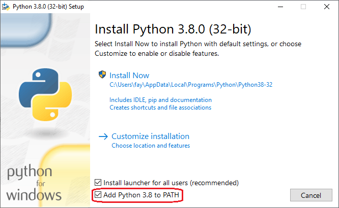

Before we start learning about Python it's important to learn a little more about the language first. What is Python? What can we do with it? Why learn this and not some other language? All those are questions you may be asking your self right now. So that's what this section basically is, an introduction to the language we are about to learn.
Python is a popular programming language. It was created by Guido van Rossum, and released in 1991.
It is used for:
Syntax example:
Many PCs and Macs will have python already installed. To check if you have python installed, run the following on your terminal:
If you find that you do not have python installed on your computer, then you can download it for free from the following website: https://www.python.org/
Rather than the command "python", consider launching Python via the py launcher, as described in sg7's answer, which by runs your latest version of Python (or lets you select a specific version). The py launcher is enabled via a check box during installation (default: "on"). Nevertheless, you can still put the "python" command in your PATH, either at "first installation" or by "modifying" an existing installation.
Checking the "[x] Add Python x.y to PATH" box on the very first dialog. Here's how it looks in version 3.8:
This has the effect of adding the following to the PATH variable:
If you installed Python but didn't add it to the PATH you can run the installer again or add it manually on your own:
The PATH is the system variable that your operating system uses to locate needed executables from the command line or Terminal window. The PATH system variable can be set using System Utility in control panel on Windows, or in your shell's startup file on Linux and Solaris. Here is a tutorial I found in YouTube for windows users:
Be careful however, the girl in the video recreated the Path variabe,
which rewrote her original Path variable. You probably don't want to do this, because
other programs you may installed in the past, such as NodeJS and npm
have already been added to the Path variable, which is why you are able to access them in the
terminal by writing "node" and "npm". So, instead of rewriting Path variable like the lady
in the video did, try editing it instead.
So, just like she added those values while making Path variable,
that's what you will do too, but you will add those values in your original Path variable, to do that
click on Path, and instead of pressing the "New" button press the one at it's right that writes
"Edit". Another window will open after that where you can see all the values inside Path,
there you can press the "New" button to add values, so add the path of Python and
the path of the script folder like the girl in the video did, the only difference is that you will have to add them one by one.
To find where Python is installed in your computer you can try running the following python script in the command prompt:
AppData is a hidden file, so if you are trying to access it from file explorer you should go to settings in alexi directory and make hidden files visible. Anyway, after you find the directory you can copy the paths like the girl in the video.
What's the difference between system variables and user veriables? The system variables are system-wide accepted and do not vary from user to user. Whereas, user variables are configured differently from user to user. When I tried editing Path variable in user variables it didn't work for me, I don't know why, so if you have the same problem then just edit Path in system variables and everything should work.
Now, if you are using Ubuntu like me then "python" will still not work with bash. That's because variables are not passed to child shells by default, only if they are exported. Something I should had probably mentioned before is that Ubuntu has already python installed, and it's added to it's Path variable. Try searching for it's location:
So, if you have Ubuntu then python is already installed to your computer, and you can access it by typing "python3". I didn't know this before, and I ended up having Python installed in my computer twice.
So, what do I do now? There are few different options I can take, I could keep both pythons, but I would rather not. So I have to choose which I prefer, if I uninstall the Python that was installed with Ubuntu then I would have to add the Python that I installed before in the Ubuntu's PATH variable. If I uninstalled the Python that I downloaded then I would have to add Python3 that was installed with Ubuntu to my windows PATH variable. We already learned how to edit the PATH variable in windows, so for the sake of this tutorial, I think it would be cool to learn how it's done with bash too.
First you can remove python3 that was installed with Ubuntu by using the following command: sudo apt-get purge python3
After the process is done, you should type sudo apt autoremove python3.
Whenever you install an application the system will also install the software that this application depends on. It is common in Ubuntu/Linux that applications share the same libraries. When you remove the application the dependency will stay on your system.
So apt-get autoremove will remove those dependencies that were installed with applications and are no longer used by anything else on the system.
To add values to the PATH variable you can use the export $PATH=$PATH:value command. From what I understand, you can change the values of a variable like this: export $VARIABLE=value, but this would rewrite the value that's already set in the variable. That's why we write export $PATH=$PATH:value, the $PATH references to the value the variable already has, the ":" is used to seperate paths inside the variable, and the value should be the path you are adding to the variable. So here is what the commands should look like:
In a Windows command shell you can type "notepad.exe" or "notepad" and in both cases it will launch the same executable binary. In Bash you must use "notepad.exe". So even if you add the path of the python folder to the PATH variable you will not be able to access it by writing "python", you will have to write "python.exe". To fix this problem you can add an alias for python.exe:
By using the PATH=$PATH:value you only change your PATH variable temproarily. The alias you set is also temporary. After you close the terminal and reopen it the changes you made will be gone. To make those changes permanent you have to add those commands in the ~/.bashrc file. A bashrc file is shell script that Bash runs whenever it is started. Along with setting in the OS, the bashrc helps determine how your command line interface (CLI) or Terminal app looks and acts. ... In most cases, the bashrc is a hidden file that lives in your home directory, it's path is ~/. bashrc. The /etc/skel/.bashrc file is copied into the home folder of any new users that are created on a system, so by editing the /etc/skel/.bashrc file you can create a default ~/.bashrc file for all new users that get created on your computer and thus make certain that all users begin with the same settings or environment. So, you only really need to add those commands iside the ~/.bashrc file but adding them in /etc/skel/.bashrc file would also be good for the future.
So, what exactly should you do? First type cd ~/ then you can edit the .bashrc file by writing
sudo vi .bashrc. You need to add sudo so that you edit it as an administrator, and it will ask you to enter
your password, if you don't edit it as an administrator you won't be able to save it. After you start editing it
you will see a script, don't care about what it does, you can go to the end or the beginning of the script, wherever you like,
press i to enter import mode and you can right click to paste the following commands:
PATH=$PATH:/mnt/c/Users/usr/AppData/Local/Programs/Python/Python310/
PATH=$PATH:/mnt/c/Users/usr/AppData/Local/Programs/Python/Python310/Scripts/
alias python='python.exe'
Don't forget to change "usr" with your username. After you are done press ESC, then type
:wq! and press enter. You can repeat the same process for /etc/selk/.bashrc file and you are done.
Restart your terminal or write source ~/.bashrc and you can then type python --version and it should hopefully work.
So, to conclude. If you have Ubuntu installed in your computer, you do not need to install Python since it's already installed, you will just have to add the path of it in the PATH variable if you want to be able to access it with windows shell and also you may need to create a Scripts folder and add that to the PATH variable as well if you want to be able to access your scripts from the terminal easier. With bash you will be able to access it as "python3". To fix this you can add alias python='python3' inside your ~/.bashrc file, and then restart your terminal or run source ~/.bashrc command. If you want this process to be done automatically for all users that get created in your computer you should also add the command inside /etc/skel/.bashrc file. Another solution is to simply install python-is-python3 by using this command: sudo apt-get install python-is-python3. If you however already installed Python like I did before, you can either uninstall it and do what I wrote before, or uninstall the python3 that was installed with Ubuntu and add the Python you installed to the Ubuntu PATH variable, and also windows PATH variable too if you didn't already have the installer do this for you when installing the program. You can uninstall python3 by writing sudo apt-get purge python3 and then sudo apt autoremove python3. Then as I explained above you can edit the /etc/skel/.bashrc and ~/.bashrc files to add the paths of Python in the PATH variable, and also set an alias for python.exe since unlike windows, bash requires you to add the file extensions when running a program.
Something I didn't mention before is that if you decide to use Python that was installed with Ubuntu then in order to access it with windows command line interface you will have to access it as "python3" I believe, so after you add it to the PATH you may also want to set an alias for it, here is a tutorial:
Python is an interpreted programming language (just like JavaScript), this means that as a developer you write Python (.py) files in a text editor and then put those files into the python interpreter to be executed. The way to run a python file is like this on the command line:
Where "helloworld.py" is the name of your python file. Let's write our first Python file, called helloworld.py, which can be done in any text editor.
Simple as that. Save your file in your scripts folder. Open your command line, and run python helloworld.py. If you read the previous section, then your scripts folder should be added in the PATH variable, so you should be able to access helloworld.py from anywhere, if you didn't do this then you will have to be in the same directory as the file to run it or add a full path to the file:
By the way, you can also create and edit files directly from the command line, first you write touch file to create it and like I explained before just use the vi file command to edit, this time sudo is not needed since you do not need to open the file as an administrator to save the changes. I explained in the previous section how to edit files in command line, so check this out, it's pretty cool if you want to quickly make a change or something but a code editor is better when you work on big projects, I use VSC, and it's great, it just takes some time to open, but to open it from the command line I use the code -r directory command, and to add a new directory I use the code -add directory, I'm also pretty sure if you want to just edit a file without adding the whole directory you can write code file.
To test a short amount of code in python sometimes it is quickest and easiest not to write the code in a file. This is made possible because Python can be run as a command line itself. Type the following on the Windows, Mac or Linux command line:
From there you can write any python, including our hello world example from earlier in the tutorial:
Whenever you are done in the python command line, you can simply type the following to quit the python command line interface:
As we learned in the previous page, Python syntax can be executed by writing directly in the Command Line.
Or by creating a python file on the server, using the .py file extension, and running it in the Command Line.
Indentation refers to the spaces at the beginning of a code line. Where in other programming languages the indentation in code is for readability only, the indentation in Python is very important. Python uses indentation to indicate a block of code. See an example:
Python will give you an error if you skip the indentation.
Syntax Error:
The number of spaces is up to you as a programmer, but it has to be at least one.
No Errors:
You have to use the same number of spaces in the same block of code, otherwise Python will give you an error:
Syntax Error:
In Python, variables are created when you assign a value to it:
Python has no command for declaring a variable. We will learn more about variables later.
Python has commenting capability for the purpose of in-code documentation. Comments start with a #, and Python will render the rest of the line as a comment:
Comments can be used to:
Comments starts with a #, and Python will ignore them:
Comments can be placed at the end of a line, and Python will ignore the rest of the line:
A comment does not have to be text that explains the code, it can also be used to prevent Python from executing code:
Python does not really have a syntax for multi line comments. To add a multiline comment you could insert a # for each line:
Or, not quite as intended, you can use a multiline string. Since Python will ignore string literals that are not assigned to a variable, you can add a multiline string (triple quotes) in your code, and place your comment inside it:
As long as the string is not assigned to a variable, Python will read the code, but then ignore it, and you have made a multiline comment.
Python has no command for declaring a variable. A variable is created the moment you first assign a value to it.
Variables do not need to be declared with any particular type, and can even change type after they have been set.
If you want to specify the data type of a variable, this can be done with casting.
You can get the data type of a variable with the type() function.
We will learn more about data types and casting another day.
String variables can be declared either by using single or double quotes:
Variable names are case-sensitive.
A variable can have a short name (like x and y) or a more descriptive name (age, carname, total_volume). Rules for Python variables:
Variable names with more than one word can be difficult to read. There are several techniques you can use to make them more readable:
Python allows you to assign values to multiple variables in one line:
Make sure the number of variables matches the number of values, or else you will get an error.
And you can assign the same value to multiple variables in one line:
If you have a collection of values in a list, tuple etc. Python allows you extract the values into variables. This is called unpacking.
The Python print statement is often used to output variables. To combine both text and a variable, Python uses the + character:
You can also use the + character to add a variable to another variable:
For numbers, the + character works as a mathematical operator:
If you try to combine a string and a number, Python will give you an error:
Syntax Error:
If you want to concatenate a number, such as an integer int or a floating point float , with a string, convert the number to a string with str() and then use the + operator:
Variables that are created outside of a function (as in all of the examples above) are known as global variables. Global variables can be used by everyone, both inside of functions and outside.
If you create a variable with the same name inside a function, this variable will be local, and can only be used inside the function. The global variable with the same name will remain as it was, global and with the original value.
Normally, when you create a variable inside a function, that variable is local, and can only be used inside that function.
To create a global variable inside a function, you can use the global keyword.
In programming, data type is an important concept. Variables can store data of different types, and different types can do different things. Python has the following data types built-in by default, in these categories:
You can get the data type of any object by using the type() function:
In Python, the data type is set when you assign a value to a variable:
| Example | Data Type |
|---|---|
| x = "Hello World" | str |
| x = 20 | int |
| x = 20.5 | float |
| x = 1j | complex |
| x = ["apple", "banana", "cherry"] | list |
| x = ("apple", "banana", "cherry") | tuple |
| x = range(6) | range |
| x = {"name" : "John", "age" : 36} | dict |
| x = {"apple", "banana", "cherry"} | set |
| x = frozenset({"apple", "banana", "cherry"}) | frozenset |
| x = True | bool |
| x = b"Hello" | bytes |
| x = bytearray(5) | bytearray |
| x = memoryview(bytes(5)) | memoryview |
If you want to specify the data type, you can use the following constructor functions:
| Example | Data Type |
|---|---|
| x = str("Hello World") | str |
| x = int(20) | int |
| x = float(20.5) | float |
| x = complex(1j) | complex |
| x = list(("apple", "banana", "cherry")) | list |
| x = tuple(("apple", "banana", "cherry")) | tuple |
| x = range(6) | range |
| x = dict(name="John", age=36) | dict |
| x = set(("apple", "banana", "cherry")) | set |
| x = frozenset(("apple", "banana", "cherry")) | frozenset |
| x = bool(5) | bool |
| x = bytes(5) | bytes |
| x = bytearray(5) | bytearray |
| x = memoryview(bytes(5)) | memoryview |
There are three numeric types in Python:
Variables of numeric types are created when you assign a value to them. Int, or integer, is a whole number, positive or negative, without decimals, of unlimited length.
Float, or "floating point number" is a number, positive or negative, containing one or more decimals. Complex numbers are written with a "j" as the imaginary part:You can convert from one type to another with the int(), float(), and complex() methods, this is what we call "Casting". Python is an object-orientated language, and as such it uses classes to define data types, including its primitive types. Casting in python is therefore done using constructor functions:
Note: You cannot convert complex numbers into another number type.
Python does not have a random() function to make a random number, but Python has a built-in module called random that can be used to make random numbers:
Strings in python are surrounded by either single quotation marks, or double quotation marks. 'hello' is the same as "hello". You can display a string literal with the print() function:
You can assign a multiline string to a variable by using three quotes:
Or three single quotes:
Note: in the result, the line breaks are inserted at the same position as in the code.
Like many other popular programming languages, strings in Python are arrays of bytes representing unicode characters. However, Python does not have a character data type, a single character is simply a string with a length of 1. Square brackets can be used to access elements of the string.
Since strings are arrays, we can loop through the characters in a string, with a for loop.
We will learn more about loops another time.
To get the length of a string, use the len() function.
To check if a certain phrase or character is present in a string, we can use the keyword in.
To check if a certain phrase or character is NOT present in a string, we can use the keyword not in.
You can return a range of characters by using the slice syntax. Specify the start index and the end index, separated by a colon, to return a part of the string.
By leaving out the start index, the range will start at the first character:
By leaving out the end index, the range will go to the end:
Use negative indexes to start the slice from the end of the string.
The code bellow gets the characters from: "o" in "World!" (position -5) to, but not included: "d" in "World!" (position -2):
Python has a set of built-in methods that you can use on strings.
The upper() method returns the string in upper case:
The lower() method returns the string in lower case:
The strip() method removes any whitespace from the beginning or the end:
The replace() method replaces a string with another string:
The split() method returns a list where the text between the specified separator becomes the list items.
To learn more string methods you can check out this string methods cheatsheet.
As we learned in the Python Variables chapter, we cannot combine strings and numbers.
But we can combine strings and numbers by using the format() method! The format() method takes the passed arguments, formats them, and places them in the string where the placeholders {} are:
The format() method takes unlimited number of arguments, and are placed into the respective placeholders:
You can use index numbers {0} to be sure the arguments are placed in the correct placeholders:
We will return to string formats again in the future, for now that's all you really need to know.
To insert characters that are illegal in a string, use an escape character. An escape character is a backslash \ followed by the character you want to insert. An example of an illegal character is a double quote inside a string that is surrounded by double quotes:
Syntax Error:
To fix this problem, use the escape character \:
No Errors:
Here are some other escape characters that are used in Python:
| Code | Result | Try it |
|---|---|---|
| \' | Single Quote | Try it » |
| \\ | Backslash | Try it » |
| \n | New Line | Try it » |
| \r | Carriage Return | Try it » |
| \t | Tab | Try it » |
| \b | Backspace | Try it » |
| \f | Form Feed | |
| \ooo | Octal value | Try it » |
| \xhh | Hex value | Try it » |